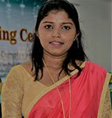

Faculty of Technology
University of Ruhuna
Faculty of Technology
University of Ruhuna
Ms. W.M.C.S. Jayaweera

Department of Bio Systems Technology
Lecturer (Probationary)
champika@btec.ruh.ac.lk , champikajayaweera@yahoo.com
94-41-22-22681


ACADEMIC AND PROFESSIONAL QUALIFICATIONS
Lecturer (Probationary): Dept. of Bio-Systems Technology, Faculty of Technology, University of Ruhuna(May/2018 up to date)
Scientific Assistant to Vice Chancellor: University of Ruhuna (May/2017 to April/2018)
Programme Coordinator: CTH UK programmes, Thames College pvt ltd(Jan/2017 to May/2017)
Lecturer: Management & Science University, Malaysia-attached to Colombo Learning Centre (Sep/2015 upto April/2016)
Temporary Demonstrator: Department of Agricultural Biology, Faculty of Agriculture, University of Ruhuna (effect from 07.03.2014 to 06.03.2015)(assisting, supporting, & advising students on their work in classrooms, laboratories & workshops as directed by academic staff)
Interner: Department of E-Remittances, Head Office,Sampath Bank PLC (Oct/2013 to Jan/2014)
PUBLICATIONS
Jayaweera W.M.C.S.; Amarasinghe O.; & De Silva K. (2014). Role of Remittance in adapting Sustainable Livelhood Strategies & Strengthening Rural Economy, proceedings of ISAE 2013, University of Ruhuna, pp: 03
A.Bandula, W.M.C.S.Jayaweera, A. De.Silva, P.O�Reilly (2015), Resilience through Underutilized Crops:Rural Food & Income Security in Sri Lanka-ICSUSL 2015,pp-08-Published in Science Direct,Elsevier.- Journal of Proceedia Food Science
Jayaweera W.M.C.S.; Amarasinghe O.; & De Silva K. (2014). Role of Remittances from Migrant workers in Strenthening Rural Livelihood and Capital Formation-SAEA Research Forum 2014-pp-37
W.M.C.S.Jayaweera, A. De.Silva, Patrick Oreily & Asha S.Karunarathna, Livelihood Analysis : A case of UUC farmers in Moneragala District - SUSL conference 2016
AWARDS & FELLOWSHIPS
The Vice Chancellor's Gold Medal for the graduate with best overall performance for academic, extracurricular & core curricular activities in 2013 awarded from University of Ruhuna
MEMBERSHIPS & ACTIVITIES IN PROFESSIONAL BODIES
RESEARCH INTERESTS
Molecular Biology & Biotechnology
Plant Physiology
Bioinformatics
Environmental Science
Agricultural Economics